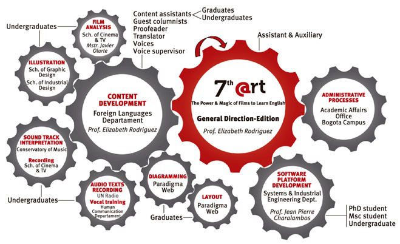

ABOUT US (English version)
7th@rt is a virtual tool researched, created and produced by the Foreign Languages Department to support the autonomous learning of English as a foreign language of under and postgraduates at Universidad Nacional de Colombia by making use of Cinema, the Internet and Virtual Learning environments, through learning activities aiming at encouraging and developing anticipation, comprehension and extension macro abilities based on the characters, the settings, the topics and the plots of the films.
In other words, 7th @rt is concerned with providing opportunities for autonomous learners to strengthen and to help foster positive attitudes to improve their knowledge of the English language, language skills and learning strategies. In this sense, it is a goal but more significantly it is an on-going process principled by the idea that learning a foreign language is not only a communicative and cooperative activity itself, but very importantly, an autonomous one. It therefore emphasizes the great need and importance of students' initiatives and contributions to their learning experience in the process of becoming autonomous learners.
The adaptation process of 7th @rt to the HTML5 language is carried out through a project of the Academic Affairs Office, Bogota Campus, as part of a macro project called "Strengthening of Academic Communicative Competencies (Reading and Writing) through Curriculum and Use of Foreign Languages" (Global Development Program 2013-2015), further continuing the research-creation study entitled 7th @rt Virtual Materials for Autonomous Learners (Research Affairs Office, Bogota Campus).

Strengths
- It is an innovative learning tool and a pioneer in the use of Cinema, the Intemet and the virtual learning environments, within the framework of the Autonomous Learning of English in the Colombian context.
- It facilitates learners exposure to authentic language and language use in authentic cultural contexts.
- Texts, images and sound tracks are original and strictly comply with Copyright Law.
- lts adaptation process to HTML5 is being done through interdisciplinary work that involves the participation of graduates and under and postgraduate students of seven Academic Units -four faculties- with the support afstal teachers, as shown in the chart below.
- This tool results from a research study developed with the participation of students of the Philology and Languages Degree.
7th @rt format presents
- A video tutorial.
- A film billboard linked to the activity sets, with a filter to sort by title, director and year.
- An interactive menu.
- Film synopsis.
- Learning activities based not only on the films, but also on the invaluable academic research reports of Universidad Nacional de Colombia, dealing with picture and documentary films.
- Film reviews and film related columns written by teachers from different departments at UN and by guest columnists.
- Compelling information related to the topics.
- Native and non-native recorded audio texts.
- A voice recording resource.
- A board that allows interaction with and amongst end users.
- The tool prototype, research version.
Your comments and suggestions are warmly welcomed on the 7th @rt Wall.
Elizabeth Rodriguez
Creator & General Director - Editor